Šišanje
Sve vrste šišanja osim duge kose: fade, prijelazi, linije. Oko 30 minuta.
16 € · centar 18 €
Barbershop · Zagreb · 4 lokacije
Barber shop u Dubravi, na Voltinu i u Donjem gradu. Fade, klasično šišanje, uređivanje i farbanje brade, brijanje glave i dječje šišanje. Termin rezervirate online preko Bukera ili telefonom.
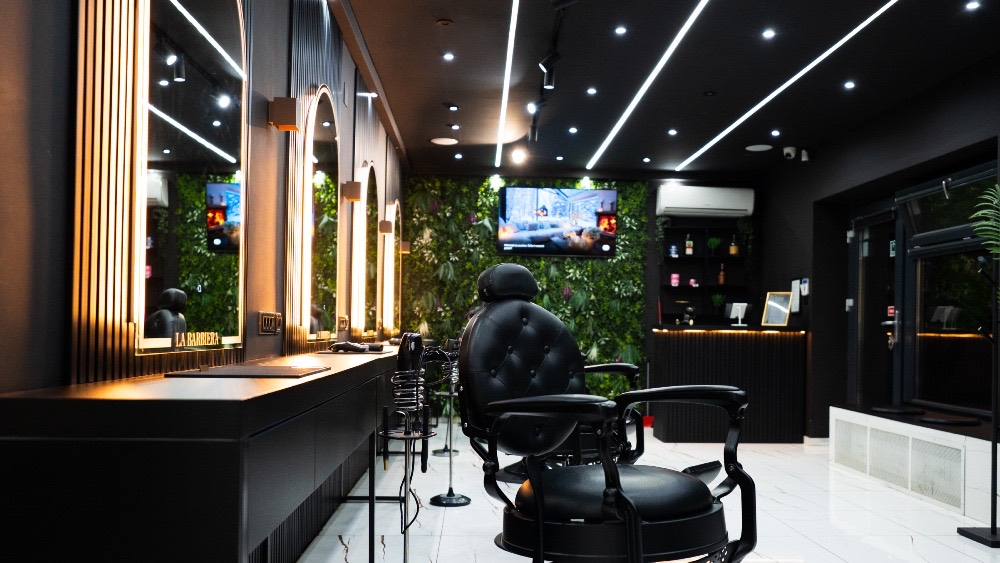
Usluge
Cijene vrijede za Dubravu (Dubrava 175 i Dankovečka 6). U centru, na Voltinu i u Donjem gradu, neke su usluge 2 € skuplje. Pogledajte cijeli cjenik po lokacijama.
Sve vrste šišanja osim duge kose: fade, prijelazi, linije. Oko 30 minuta.
16 € · centar 18 €
Kosa i brada u jednom terminu od 30 minuta.
26 € · centar 28 €
Shaverom ili britvom. Šišanje mašinicom na nulu stoji 8 €.
10 €
Sve vrste dječjeg šišanja, oko 15 minuta.
15 €
Kratka i srednja brada 10 €, duga brada 15 €, konturiranje linija britvom 4 €.
od 4 €
Šišanje s pranjem kose i frizurom, 30 minuta. Farbanje brade 6 €.
19 € · centar 21 €
Galerija
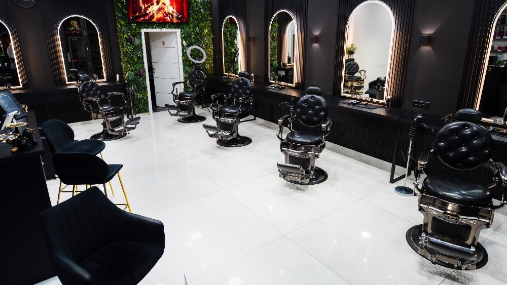
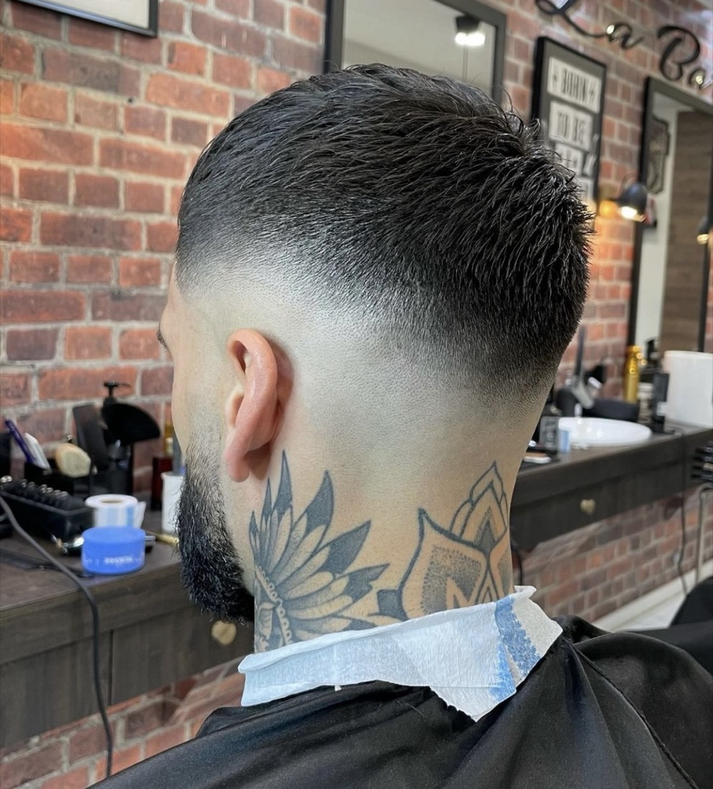
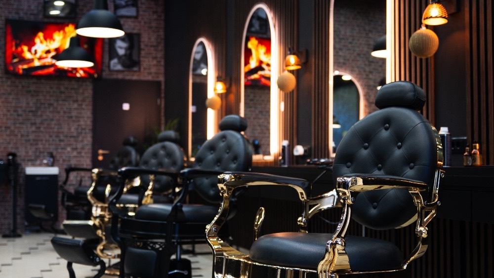
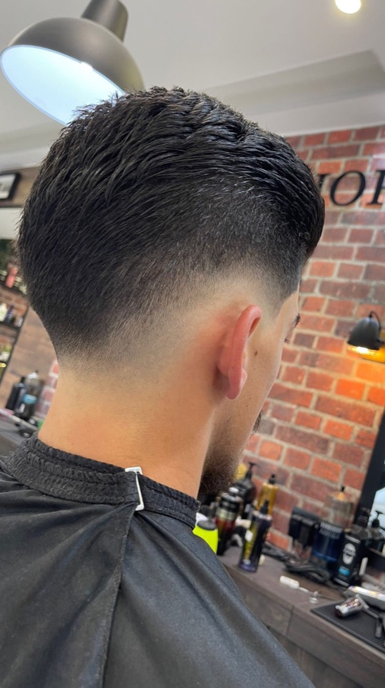
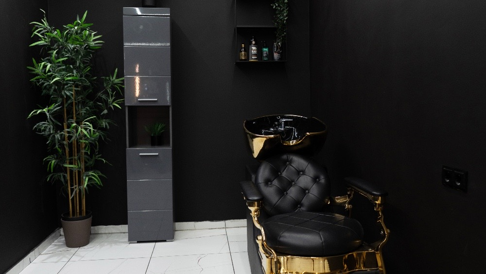
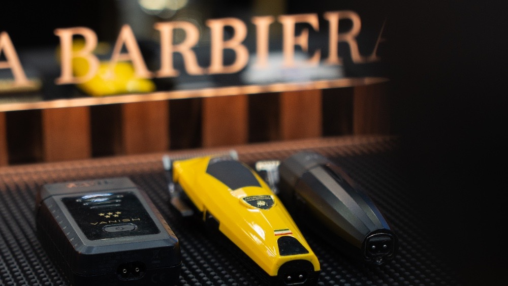
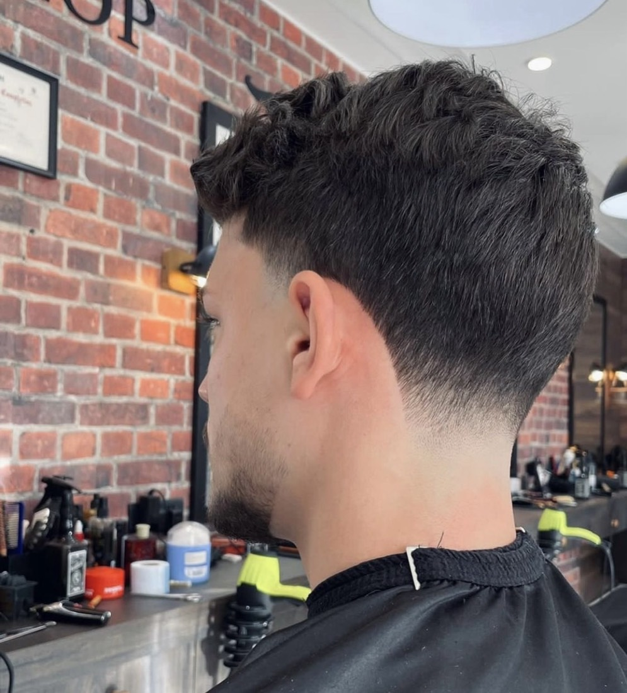
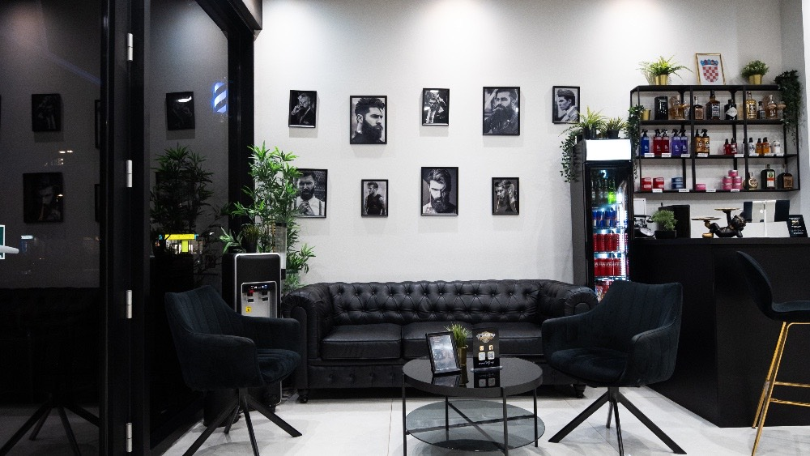
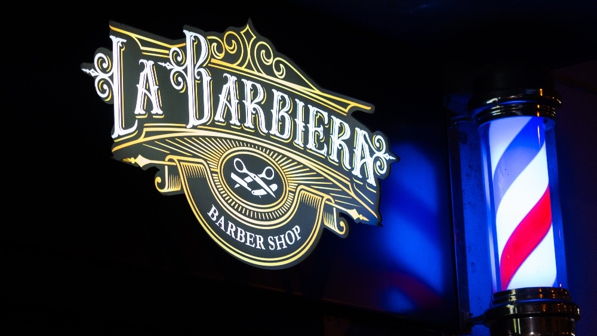
Lokacije
Svaka lokacija ima svoj tim i svoj kalendar na Bukeru. Oznaka „Sada radi” računa se prema radnom vremenu objavljenom na Bukeru.
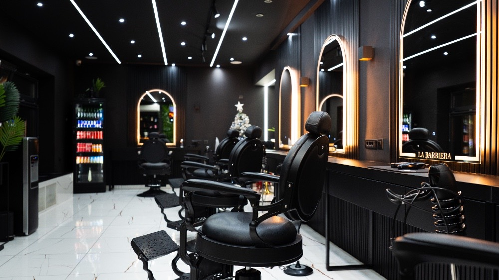
Radno vrijeme
Dubrava 175, 10040 Zagreb
Tim: Roni E., Valon K., Harbin B., Driton B.
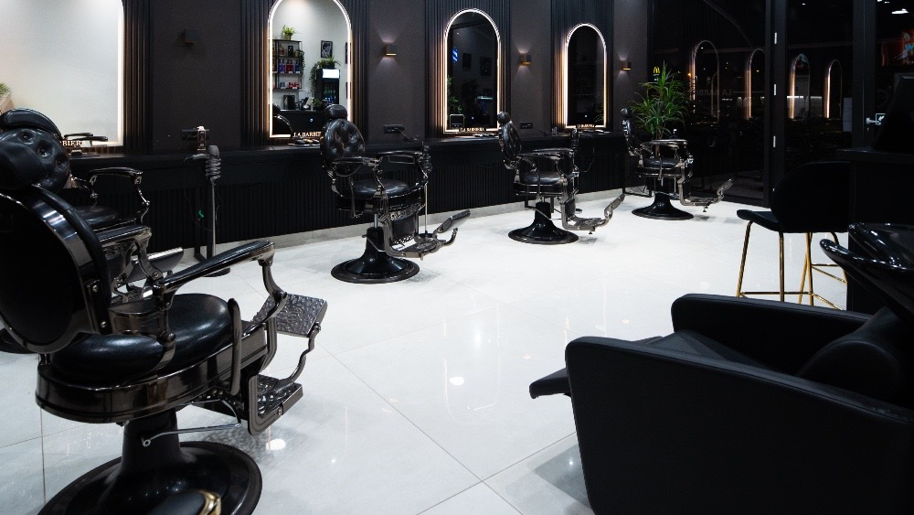
Radno vrijeme
Dankovečka ulica 6, 10040 Zagreb
Tim: Artan H., Ardit A., Fitim I., Jeton Z.
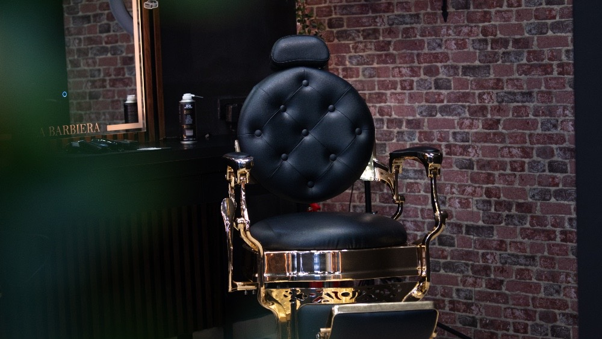
Radno vrijeme
Tomislavova ulica 15, 10000 Zagreb
Tim: Lindi B., Gergur R. i ostali
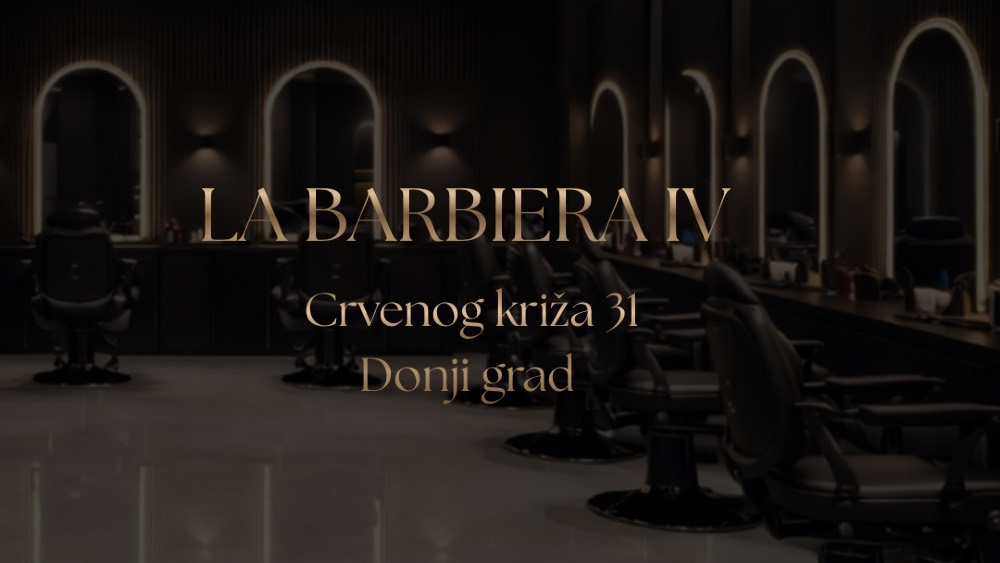
Radno vrijeme
Ulica Crvenog križa 31, 10000 Zagreb
Tim: Çlirim H., Hekuran G., Jeton Z.
Nedjeljom su svi saloni zatvoreni.
Rezervacija
Svaki salon ima svoj kalendar na Bukeru i rezervacija je odmah važeća. Odaberite lokaciju i uslugu, a mi vas vodimo ravno na slobodne termine. Radije zovete? Gumb „Nazovi” bira broj odabranog salona.
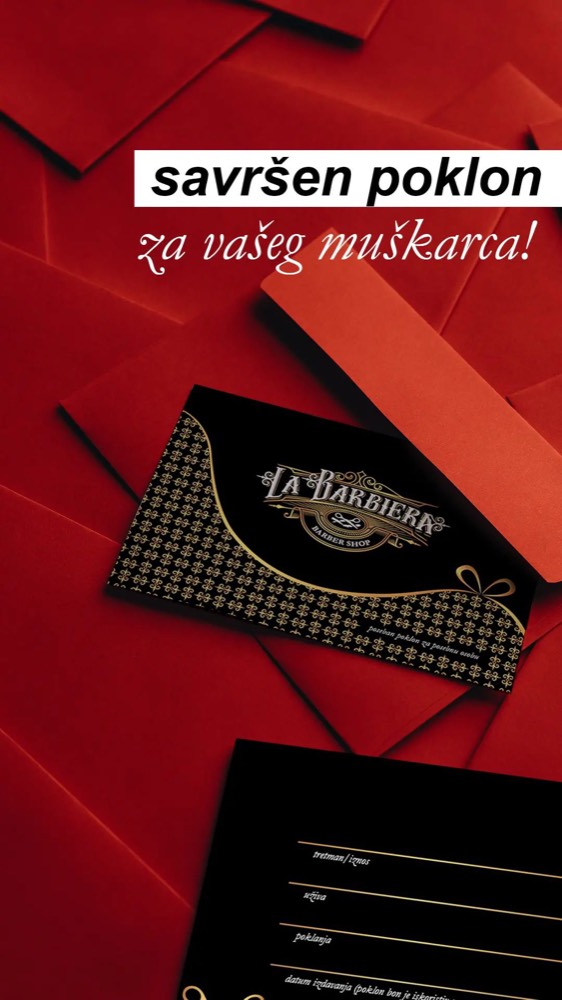
Poklon bon
Crni poklon bon sa zlatnim logotipom La Barbiere. Za vrijednost bona i preuzimanje pitajte u salonu ili nazovite.
Recenzije s Googlea · Dubrava 175
„Ljubazni, pristojni i profesionalni. Frizurom i stiliziranjem brade sam jako zadovoljan. Vidimo se opet.”
Anto Č.
„Prvi put sam došao na šišanje, bilo je super, mid fade je bio odličan i još nakon šišanja ti ponude neko piće iz hladnjaka.”
Petar
„Uređivanje brade, brzo, ali pedantno i kvalitetno. Preporučam!”
Ivan M.
„Naručiš se preko Bukera, odmah si na redu za taj termin, dečki rade kvalitetno i efikasno, top!”
Ian P.
Pitanja
Online preko Bukera (web ili aplikacija) za odabranu lokaciju, ili telefonom. Rezervacija na Bukeru odmah je važeća. Gumbi „Rezerviraj” na ovoj stranici vode ravno na kalendar odabranog salona.
Da. Dječje šišanje (sve vrste) traje oko 15 minuta i stoji 15 € na svim lokacijama.
U Dubravi (Dubrava 175 i Dankovečka 6) šišanje stoji 16 €, a u centru (Voltino i Donji grad) 18 €. Usporedbu svih usluga pogledajte u cjeniku.
Ne. Saloni rade od ponedjeljka do subote, a nedjeljom su zatvoreni.